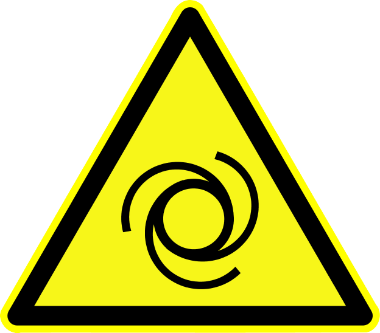

The fresh water system consists of two 1680 litre stainless-steel fixed storage tanks, a hydrophore with a 230VAC electrical pump and an on-demand, plate heat-exchanger based, hot water generator.
Refer to Figure 4.3, “Safety equipment (above deck)” for a system overview.
The twin tanks are normally commoned through valves located under the saloon floor: it is possible to operate the system from just one tank by closing the appropriate valves between tanks and on the commoning manifold.
Ensure that the hose you use for topping up your potable water tanks is appropriate for potable water and that your chosen water water source is in fact dispensing drinking water.
Locate the deck filler marked "WATER".
Clean the area around the filler and ensure that any adjacent filler caps are firmly closed.
Clean the end of the hose which will be inserted into the ship's filler port and run water through the hose for a sufficient time to eliminate any retained or static water from the supply.
Open the deckfitting, insert the hose and commence filling.
Fill the tank. Do not overfill - a 90% reading on the tank gauge is a sensible target.
Remove the hose and replace the filler cap.
Make an entry in the ship's log.
Each tank is equipped with an electronic tank level monitoring system consisting of a hydrostatic tank level sender which broadcasts messages onto the ship's domestic NMEA 2000 bus. Tank level data can be displayed on screens located at the helm, domestic panel and elsewhere.
 Variations in tank level readings are possible due to conditions of trim, list, seaway and callibration.
Variations in tank level readings are possible due to conditions of trim, list, seaway and callibration.
 Tank level sensing requires NMEA BUS 0 to be enabled on the ship's domestic panel.
Tank level sensing requires NMEA BUS 0 to be enabled on the ship's domestic panel.
 [mare1]
[mare1]
The ship's hydrophore is installed in the engine room and consists of a 230VAC electrically driven pump and pressure vessel. The system is set to a default pressure of 3bar and will automatically maintain this, starting the pump as necessary to cater for demand.
The system is entirely automatic in operation and it is recommended that the hydrophore remain powered at all times.
 To enable and disable the pressure system use the switch labelled HYDROPHORE on the ship's domestic panel.
To enable and disable the pressure system use the switch labelled HYDROPHORE on the ship's domestic panel.
 The pressure system can only be enable and disabled if NMEA BUS 0 is enabled.
The pressure system can only be enable and disabled if NMEA BUS 0 is enabled.
 The motor and pump have an exposed mechanism and may begin operation unexpectedly.
 Danger of electrical shock 230VAC
Danger of electrical shock 230VAC
 [spec1]
[spec1]
Hot water is generated by a heat exchanger system located in the engine-room. When a hot-water tap is opened fluid from the ship's thermal buffer is pumped through the heat exchanger primary circuit and used to heat cold water, delivered by the hydrophore, in the heat exchanger secondary circuit.
An independent pumped hot-water loop attempts to predict demand for hot water and ensure that, under most circumstances, pre-heated water is available at an outlet in anticipation of its likely use.
When the thermal buffer is fully charged it can supply enough hot water for at least a day's normal domestic usage without the input of any additional energy.
If the thermal buffer is cold, then it can be recharged for the purpose of hot water generation almost instantaneously from the ship's boiler or less rapidly by use of the immersion heaters (waste heat from operation of the main engine and generator is also used to recharge the buffer). Refer to Section 10.1, “Thermal buffer” for detailed information on managing the thermal buffer.
 To enable and disable the hot-water system use the switch marked THERMAL STORE on the ship's domestic panel.
To enable and disable the hot-water system use the switch marked THERMAL STORE on the ship's domestic panel.
 To enable and disable the hot-water loop use the switch marked HOT WATER LOOP on the ship's domestic panel.
To enable and disable the hot-water loop use the switch marked HOT WATER LOOP on the ship's domestic panel.
 The hot water system can only be enabled and disabled if NMEA BUS 0 is enabled.
The hot water system can only be enabled and disabled if NMEA BUS 0 is enabled.
 FILL ME IN
FILL ME IN
WCs on the vessel are operated electrically and flush from the ship's fresh water system, discharging directly into the ship's black water holding tank. The WC units are operated by a simple flush button and consume either 3 litres of 5 litres of water per operation depending on the selected flush mode.
 WC units operate at 230VAC, unplug from mains before servicing.
WC units operate at 230VAC, unplug from mains before servicing.
 [sani1]
[sani1]